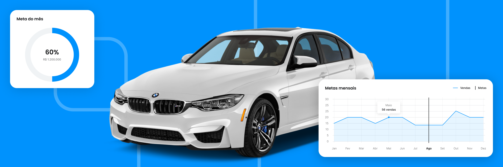
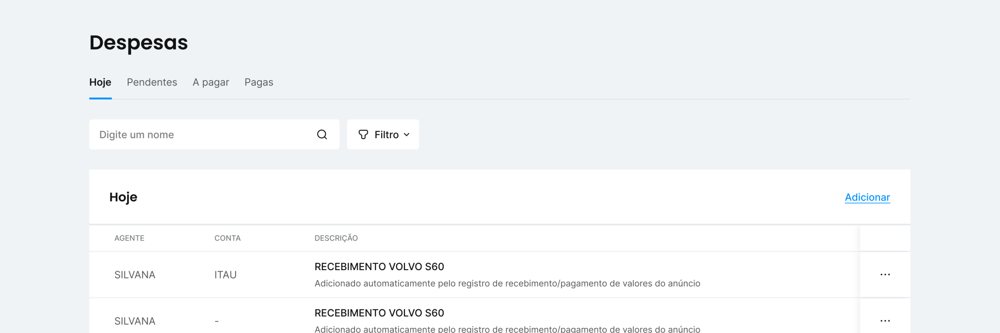
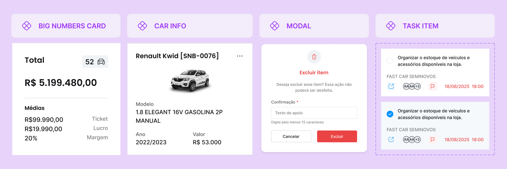
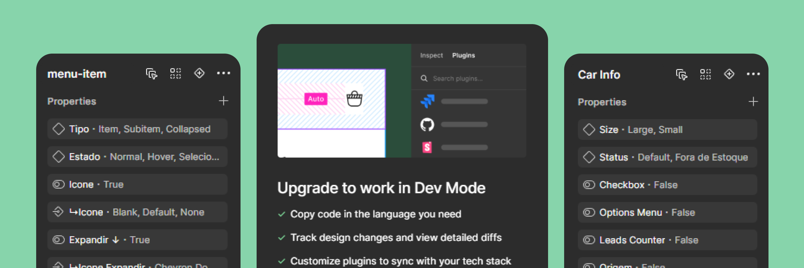
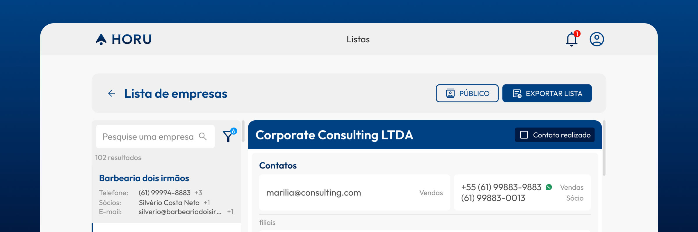
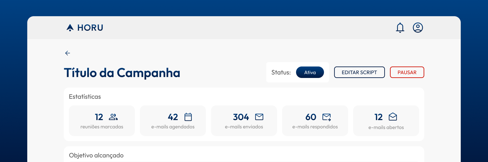
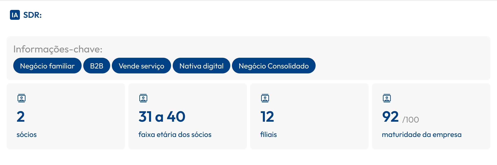

Transformando um módulo financeiro ignorado em uma alavanca para novas receitas
Redesign completo de um módulo usado por menos de 10% dos clientes, recuperando a confiança dos usuários e viabilizando a expansão dos serviços financeiros da empresa.
Estruturando uma biblioteca de componentes para escalar Design e Desenvolvimento
Reorganização de um projeto de design construído ao longo de três anos, reduzindo inconsistências e criando uma base escalável para Design e Engenharia.
UX Designer com cabeça de produto, prática de startup e experiência B2B.
Sempre fui o designer da galera — desde a camiseta do interclasse no Ensino Médio. Na faculdade não foi diferente, logo descobri a possibilidade de trabalhar com UX e me encantei. Já estou há mais de 8 anos projetando soluções digitais. Nesse período, me formei em Ciência da Computação na UnB, abri duas empresas, trabalhei em startup e contribuí no design de mais de 30 produtos digitais.
Minha metodologia de trabalho é orientada a dados. Gosto de pensar em conjunto com a estratégia da empresa e objetivos de negócio. Costumo acompanhar métricas de uso, conversar com usuários e avaliar possibilidades com stakeholders antes de fazer grandes alterações no produto.
Quebrar o gelo comigo é uma tarefa fácil — gosto muito de conversar e procuro entender um pouquinho de tudo. Alguns dos meus hobbies são: música, voluntariado, pintura a óleo, boxe e RPG.
8 anos
Experiência
UX-PM 3
Certificado
Founder
Horu
Habilidades
Estratégia de produto|UX/UI Design|Discovery|Pesquisa com usuários|Design System|Design Ops|Handoff
Transformando um módulo financeiro ignorado em uma alavanca para novas receitas
Como conduzi o redesign completo de um módulo utilizado por menos de 10% dos clientes, recuperando a confiança dos usuários e viabilizando a estratégia da empresa de expandir seus serviços financeiros.
Empresa
Ecosys AUTO
Duração
4 meses
Responsabilidades
Discovery · Pesquisa com usuários · Estratégia da solução · UX/UI · Design System · Handoff
⚠️ Por motivos de NDA, este case não apresenta imagens do redesign da interface.

Imagem ilustrativa — Ecosys AUTO
O desafio
Menos de 10% dos clientes utilizavam o módulo financeiro.
A baixa adoção comprometia a estratégia de lançar novos serviços financeiros.
Havia pressa para realizar apenas ajustes rápidos que viabilizassem parcerias comerciais com celeridade.
Resultado
O redesign aumentou significativamente a utilização do módulo financeiro pelos clientes e foi essencial para a estratégia de expansão comercial da empresa. A maior adesão viabilizou negociações de parcerias para monetizar serviços transacionais na plataforma, criando novas oportunidades de receita.
Contexto
A Ecosys AUTO é um SaaS B2B de gestão para revendas automotivas. A empresa definiu expandir sua receita por meio de integrações financeiras como um dos objetivos estratégicos de 2025. O plano dependia diretamente do módulo financeiro da plataforma, mas existia um grave problema: a equipe de Customer Success levantou que menos de 10% dos clientes utilizavam essa funcionalidade. Os usuários diziam que o módulo era confuso, pouco confiável e não atendia sua rotina financeira.
Meu papel
Atuei como único Product Designer responsável pelo projeto, conduzindo todas as etapas, do Discovery ao Delivery: estruturar pesquisas, definir a estratégia da solução, projetar a nova experiência e acompanhar sua implementação até o lançamento.
Trabalhei em colaboração com CTO, Product Owner, Tech Lead, Engenharia e Customer Success para alinhar necessidades de negócio, expectativas dos usuários e restrições técnicas, apoiando a tomada de decisões ao longo de todo o projeto.

Layout antigo do módulo financeiro: listagem de despesas
Discovery
Os relatos iniciais do time de CS indicavam que o módulo era considerado "confuso", mas ainda não estava claro quais fatores realmente impediam sua adoção. Para aprofundar esse entendimento, entrevistei três responsáveis pelo financeiro de revendas, buscando compreender como organizavam suas operações, quais ferramentas utilizavam e quais dificuldades encontravam na plataforma.
01
Erros em regras de negócio ao calcular incorretamente recebíveis e impostos.
02
Lógica diferente dos concorrentes, o que frustrava os usuários ao procurar recursos.
03
Clientes com operações muito informais, que não faziam controle financeiro algum.
04
Falta de recursos para migração e importação de registros anteriores à contratação.
Para validar essa percepção, entrevistei dois especialistas do setor automotivo e realizei um benchmarking dos principais concorrentes, o que permitiu confirmar as hipóteses e compreender quais comportamentos já eram esperados pelos usuários do mercado. Ao final, organizei os aprendizados em um relatório com as principais hipóteses, um roadmap priorizado por Impacto × Esforço e as métricas de acompanhamento do projeto.
Definindo o escopo
A pesquisa mostrava que pequenas melhorias rápidas dificilmente resolveriam o problema: a maior parte das barreiras estava na lógica do sistema e exigia mudanças mais profundas. Um redesenho completo significava ampliar o escopo previsto e negociar mais tempo de desenvolvimento em um contexto de pressão por entregas rápidas.
As evidências coletadas durante o Discovery deram segurança para discutir o investimento necessário e alinhar Produto, Engenharia e liderança em torno de uma solução que atacasse as causas do problema, e não apenas seus sintomas.
Construindo a solução
Com o escopo definido, iniciei a prototipação explorando diferentes formas de organizar informações financeiras complexas. Usei wireframes de baixa fidelidade para validar alternativas de navegação, hierarquia visual e organização dos dados antes de evoluir para o protótipo no Figma.
Durante o processo, identifiquei uma limitação no Design System da empresa: os componentes existentes não atendiam às necessidades do módulo financeiro e reutilizá-los comprometeria a consistência. Após alinhamento com Produto e Engenharia, decidimos expandir o Design System antes da implementação, incorporando novos componentes específicos para esse contexto.
Enquanto a interface era refinada, as regras de negócio identificadas no Discovery foram revisadas em paralelo com a Tech Lead, permitindo que Design e Desenvolvimento evoluíssem simultaneamente. Ao final, a solução contemplava quatro telas principais de gestão financeira, filtros dinâmicos, formulários simplificados para lançamento de transações, integração com estoque e notas fiscais, importação e exportação de dados e a revisão das regras de negócio.
Impacto
Nos primeiros meses após o lançamento, o time de CS realizou uma forte campanha de divulgação do novo módulo, registrando um expressivo aumento de utilização. O interesse dos usuários acompanhou as expectativas, com alta percepção de aderência da solução às suas necessidades.
Mais do que melhorar a experiência de uso, o projeto removeu uma das principais barreiras para a estratégia de expandir a oferta de serviços transacionais. Ao aumentar a confiança dos clientes, a solução passou a oferecer uma base mais sólida para integrações com ferramentas de parcelamento de multas, acesso a crédito e venda de maquininhas.
Como novas prioridades surgiram logo após o lançamento, não foi possível acompanhar essas métricas por um período mais longo. Ainda assim, pude acompanhar o produto durante seus primeiros meses em produção e validar que os objetivos iniciais estavam sendo atingidos.
Estruturando uma biblioteca de componentes para escalar Design e Desenvolvimento
Como reorganizei uma biblioteca de componentes construída ao longo de três anos de evolução do produto, reduzindo inconsistências e criando uma base escalável para Design e Engenharia.
Ao longo de três anos, o produto evoluiu rapidamente e passou pelas mãos de diferentes equipes de Design e Desenvolvimento. Esse ritmo permitiu validar o negócio, mas acumulou inconsistências que tornavam o produto cada vez mais difícil de evoluir: cada nova funcionalidade exigia mais esforço, pois não existia uma biblioteca confiável nem padrões consolidados.
Componentes visualmente semelhantes, mas implementados de formas diferentes.
Ausência de padrões consistentes para cores, tipografia e espaçamentos.
Baixa reutilização entre Design e Engenharia, aumentando retrabalho nas sprints.
Resultado
A reorganização estabeleceu uma base compartilhada para Design e Engenharia, permitindo que novas funcionalidades fossem desenvolvidas sobre padrões consistentes e reduzindo o esforço para evoluir a interface.
~25%
aumento médio na capacidade de entrega das sprints no período, segundo os indicadores acompanhados pela Product Owner. O resultado reflete diversos fatores, mas a padronização simplificou a implementação de novas interfaces.
Contexto
A Ecosys AUTO nasceu como um software sob medida para uma única revenda automotiva. Com o crescimento do negócio, o produto foi adaptado para o modelo SaaS e evoluiu rapidamente. Nesse período, diferentes equipes participaram da construção da interface: primeiro desenvolvedores, depois uma fábrica de software terceirizada e, posteriormente, outro Product Designer. O legado foi uma interface fragmentada, com padrões conflitantes e uma biblioteca que já não acompanhava a complexidade da plataforma.
Meu papel
Essa foi minha primeira iniciativa ao ingressar na empresa. Fui responsável por auditar a interface existente, estruturar uma biblioteca de componentes reutilizáveis e estabelecer padrões para que Design e Engenharia evoluíssem o produto sobre uma mesma base.
Além da reorganização inicial, defini critérios para a evolução contínua da biblioteca e atuei como facilitador entre Produto, Engenharia e QA, alinhando padrões, processos e decisões para que a biblioteca fosse incorporada ao fluxo de desenvolvimento da equipe.
Auditoria
O primeiro passo foi uma auditoria completa do sistema em produção e dos arquivos de design. Analisando as telas, mapeei componentes similares com visual e comportamentos diferentes — candidatos à unificação — e outros que fugiam dos padrões de cor, tipografia ou espaçamento.
Auditei também a biblioteca existente no Figma para identificar variações redundantes, inconsistências de nomenclatura e oportunidades de consolidação. A principal decisão dessa etapa foi equilibrar consistência visual e viabilidade técnica, priorizando componentes próximos aos já utilizados pela Engenharia sempre que isso não comprometesse a qualidade da experiência.

Alguns dos componentes unificados na nova biblioteca
Estruturação da biblioteca
Os padrões visuais já existiam nas telas de maior relevância, mas não haviam sido replicados em telas criadas posteriormente. Para corrigir isso, era preciso definir variáveis fixas e implementá-las. Aproveitei para expandir a paleta de cores e a hierarquia tipográfica, incorporando variações que provavelmente seriam usadas conforme o produto evoluísse — antecipação que reduziu revisões estruturais a cada nova funcionalidade.
Na sequência, organizei os componentes em uma estrutura de Design Atômico, configurando primeiro os elementos mais simples e montando os mais completos a partir dos átomos. Isso aumentou o reaproveitamento e tornou a evolução da biblioteca mais consistente e previsível.

Upgrade de acessos Dev Mode, possibilitando acesso a recursos de handoff para desenvolvedores
Integração com Engenharia
Um arquivo organizado no Figma, por si só, não resolveria o problema. O desafio era refletir essa organização no processo de desenvolvimento e, consequentemente, no produto entregue aos clientes.
DEV MODE
Justifiquei o investimento em licenças do Figma Dev Mode, dando à Engenharia acesso a documentação de comportamento de CSS, réguas de espaçamento e variáveis — reduzindo interpretações divergentes entre design e implementação.
REFATORAÇÃO + WORKSHOPS
Refatoramos os principais componentes seguindo a estrutura atômica. Em parceria com a Tech Lead, ministramos workshops mostrando a nova organização e os benefícios de longo prazo desse retrabalho.
QA
Com a analista de QA, incorporamos a correspondência entre código e design como critério de validação das entregas, evitando que inconsistências visuais voltassem a surgir.
Essa integração permitiu que a biblioteca deixasse de ser apenas um recurso de design e passasse a servir como referência compartilhada para todo o ciclo de desenvolvimento.
Redirecionando a estratégia da Horu: da automação à inteligência comercial
Como conduzi a investigação que redefiniu o foco do produto e liderei sua evolução de uma plataforma de cold mailing para uma solução de inteligência comercial, mais rentável e mais aderente às necessidades dos clientes.
Empresa
Horu
Duração
4 meses
Responsabilidades
Estratégia de produto · UX · Discovery · Customer Success · Gestão de produto

Versão final da plataforma, após o redirecionamento de estratégia
O desafio
A Horu nasceu com a proposta de automatizar a prospecção B2B por meio de geração de leads e campanhas de cold mailing com auxílio de IA. A proposta foi bem recebida nas primeiras validações e conquistamos os primeiros clientes pagantes.
Porém, os resultados dos primeiros meses em produção mostraram que a automação não gerava resultados suficientes para justificar o investimento da maioria dos clientes. Precisávamos entender onde estava a lacuna entre ideia e execução e encontrar um caminho viável para entregar valor.
Resultado
A mudança de estratégia levou a Horu de uma plataforma de automação de cold mailing para uma solução de inteligência comercial, com maior aderência entre empresas que já possuíam processos de prospecção ativa.
+40%
de aumento estimado no LTV
+30
clientes pagantes, com retenção e satisfação
Contexto
A Horu surgiu da dor que meus sócios e eu sentíamos como donos de uma fábrica de software ao tentar escalar o negócio. Identificamos, a partir da nossa experiência e de conversas com outros empreendedores, uma dificuldade generalizada entre pequenas empresas B2B de encontrar potenciais clientes com o perfil ideal.
A primeira tese era que campanhas de cold mailing gerariam leads B2B com melhor eficácia que campanhas em redes sociais. A proposta atraiu nossos primeiros clientes, mas, após o lançamento, os dados de utilização e o contato próximo com eles mostraram que a ideia não trazia o retorno esperado.
Meu papel
Como cofundador e Diretor de Experiência, fui responsável pela experiência do cliente e pela evolução do produto de ponta a ponta. Além de UX e UI, conduzia onboarding, acompanhava Customer Success, realizava pesquisas e reuniões de feedback e orientava a priorização do backlog.
Participava diretamente das decisões estratégicas, conectando dados de uso, feedback dos clientes e objetivos comerciais. Na pivotagem, conduzi a investigação e liderei a tradução da nova estratégia para a experiência, funcionalidades e processos da plataforma.

Versão antiga, centrada em campanhas de e-mail
Descoberta do problema
Os primeiros relatórios mostraram taxa de abertura satisfatória, mas taxa de resposta muito baixa: a conversão média de e-mails enviados em reuniões de vendas ficava entre 0,2% e 0,5%. Ao relacionar isso ao volume de leads dos planos, percebemos que muitos clientes poderiam consumir todo o limite mensal sem gerar uma única reunião.
ROI LIMITADO
O modelo só fazia sentido para clientes com ticket elevado e estrutura de marketing que refinava os disparos manualmente — público muito menor que o pretendido.
TELEFONE > E-MAIL
Nós mesmos constatamos que a prospecção por telefone apresentava taxas de resposta e agendamento significativamente maiores.
Complementei essa percepção com entrevistas e acompanhamentos de Customer Success: os clientes enxergavam potencial na plataforma, mas tinham dificuldade em justificar o investimento diante dos resultados. Isso mudou nossa leitura do problema e apontou uma nova direção — o maior valor da Horu não estava em automatizar a prospecção, mas em fornecer dados melhores para alimentar o trabalho dos vendedores.
Redirecionando a estratégia
Até então, grande parte do esforço tecnológico estava concentrada na automação e na qualidade das campanhas de e-mail. Passamos a priorizar a inteligência comercial: ampliar a quantidade e a qualidade dos dados disponíveis, especialmente telefones e informações utilizáveis diretamente pelos vendedores durante a prospecção.
A mudança também alterou nosso público prioritário: empresas com alguma maturidade comercial extraíam muito mais valor da plataforma, enquanto clientes sem rotina de prospecção tinham dificuldade em transformar dados em vendas. A partir dessa decisão, liderei a tradução da nova hipótese para uma versão atualizada do produto, lançada cerca de dois meses após a identificação do problema.
Evoluindo o produto
Reposicionamos o produto para apoiar a prospecção por telefone, além da geração de e-mails, mudando principalmente a forma como coletávamos, enriquecíamos e apresentávamos os dados. Criamos um novo motor de busca focado em informações telefônicas, ampliando também os dados de cada empresa, como LinkedIn e informações de seus gestores.
Criamos ainda o IA SDR, que analisava as informações coletadas e gerava um resumo comercial da empresa, ajudando o vendedor a identificar assuntos relevantes antes do contato. Com as mudanças, reorganizei a experiência de listagem das empresas, permitindo que o vendedor executasse suas rotinas de prospecção ativa diretamente pela plataforma ou exportando para o CRM.

IA SDR: resumo comercial gerado a partir dos dados da empresa
Impacto
A nova abordagem tornou a proposta de valor mais compatível com a forma como os clientes efetivamente realizavam sua prospecção. Em vez de depender da automação completa das campanhas, a Horu passou a apoiar diretamente o trabalho dos vendedores, fornecendo dados e contexto para tornar cada contato mais qualificado.
A experiência nos permitiu identificar com clareza o perfil de cliente que conseguia extrair valor da plataforma: empresas com uma rotina estruturada de prospecção e pessoas dedicadas à atividade comercial.